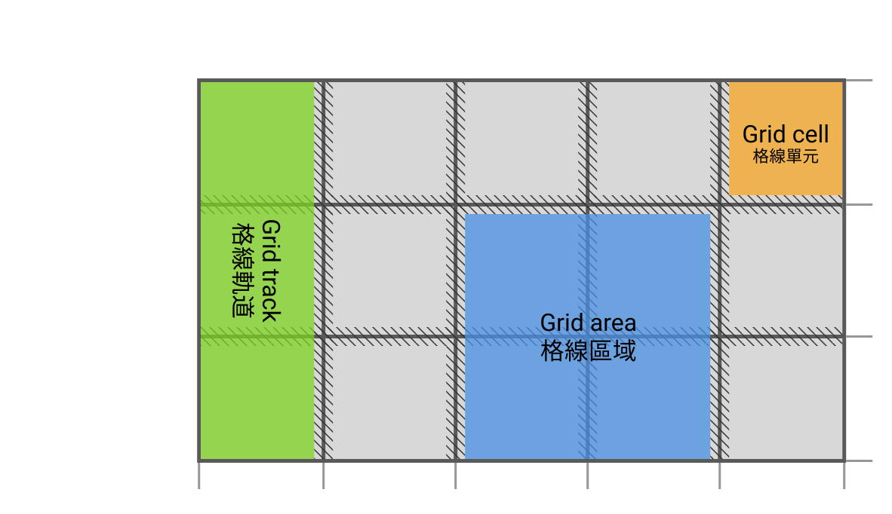

Making CSS from Good to Great
The Power of Subgrid


🥑 Developer Advocate 🥑

Web layouts over the years


塊級佈局
Block layout
designed for laying out documents

內聯佈局
Inline layout
designed for laying out text

表格佈局
Table layout
designed for laying out 2D data in a tabular format

絕對定位
Positioned layout
designed for very explicit positioning without much regard for other elements in the document

Flexible box layout
describes a CSS box model optimised for user interface design and designed for laying out more complex applications and webpages
为用户界面设计的布局模型；可以对齐主轴或交叉轴上的项目，从而提供对一组项目大小和对齐的高级控制
Grid layout
Defines a two-dimensional grid-based layout system, optimised for user interface design.
二维网格布局系统，为用户界面设计的布局模型
Why is CSS grid special?
“Grid works from the container in,
other layout methods start with the item”
—Rachel Andrew
Layout technique: inline-block
Item A
Item B
Item C
Item D
Item E
Item F
Layout technique: float
Item A
Item B
Item C
Item D
Item E
Item F
Layout technique: flex
Item A
Item B
Item C
Item D
Item E
Item F
Grid is the only layout technique that establishes a relationship between rows and columns of grid items.
只有Grid中的行列才是真實的，是有關係的。
Basics of CSS Grid
Define your grid.
建立格線容器

Place items in the grid.
放置格線單元

Grid terminology

Browser support for Grid (Level 1)

Using DevTools to learn Grid
Live demo
What's in Grid Level 2?
-
Level 2 expands Grid by:
- adding “subgrid” capabilities for nested grids to participate in the sizing of their parent grids
- aspect-ratio–controlled gutters
Why do we need subgrid?


The subgrid syntax
Same properties, more values
grid-template-columns: subgrid <line-name-list>?
grid-template-rows: subgrid <line-name-list>?The subgrid keyword indicates to the browser the nested grid will use the same sizing as its parent along the relevant axis.
.subgrid-container {
grid-columns: 2 / 5; /* placement for the subgrid container itself */
display: grid; /* you must still apply a display: grid to the subgrid */
grid-template-columns: subgrid;
grid-template-rows: subgrid;
}Using DevTools to learn Subgrid
Live demo
Browser support for subgrid

References
- CSS Flexible Box Layout Module Level 1
- CSS Grid Layout Module Level 1
- CSS Grid Layout Module Level 2
- Codrops reference: Subgrid
- Subgrid on MDN
- Grid Level 2 and Subgrid
- Why display: contents is not CSS Grid Layout subgrid
- CSS Grid Level 2: Here Comes Subgrid
- Grid by Example
- Researching a Property in the CSS Specifications
謝謝大家 🙇♀️


Header font is Ostrich Sans by Tyler Finck.
Body font is Libre Baskerville by Pablo Impallari.